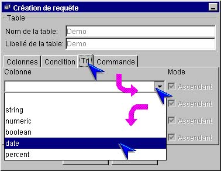
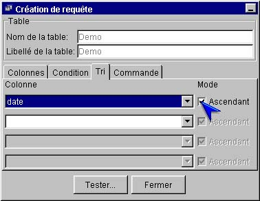

I-SIS Explorer

Guide d'utilisation
|
|
I-SIS Explorer |
|
|
Guide d'utilisation |
||
Dans le volet "Tri" du créateur de requête, il est possible d'appliquer des critères sur des colonnes pour trier les objets requêtés.
Cliquez le volet "Tri", si nécessaire, pour l'afficher au premier plan,
Dans
la première case "Colonne" vide et déverrouillée, cliquez  pour afficher la liste des colonnes de la table,
pour afficher la liste des colonnes de la table,
Cliquez le nom de la colonne à trier,

Son nom s'affiche, et la case "Colonne" suivante est déverrouillée,
Cochez / décochez la case "Mode" pour un tri ascendant ou descendant.

Copyright © 2003 BV Associates. Tous droits réservés.